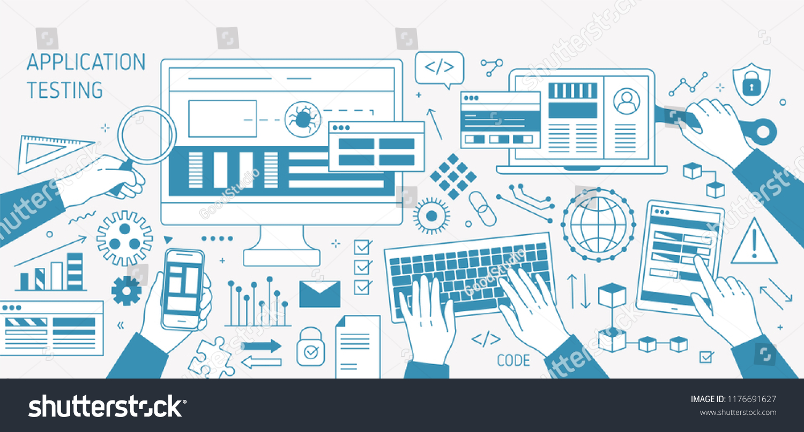
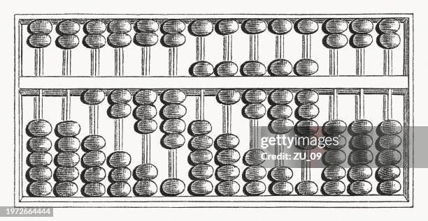
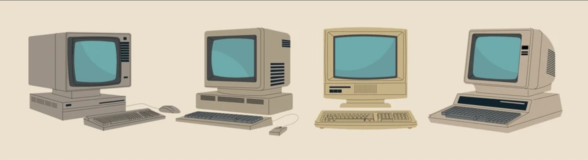

La informática es la ciencia y el área de estudio encargada del tratamiento, almacenamiento y procesamiento automático de la información mediante computadoras y otros sistemas electrónicos. En la sociedad moderna, la informática no solo facilita la automatización de tareas complejas, sino que representa la columna vertebral de las comunicaciones, el comercio, la educación y el entretenimiento a nivel global.
El desarrollo de la informática no ocurrió de la noche a la mañana, sino que fue un proceso progresivo impulsado por la necesidad humana de calcular con mayor rapidez y precisión. Durante milenios, las civilizaciones antiguas buscaron métodos para facilitar las operaciones matemáticas complejas.
·El Ábaco: Considerado el primer instrumento mecánico de cálculo de la historia. Utilizado por civilizaciones como la china, la babilónica y la griega, permitía realizar operaciones aritméticas básicas (sumas, restas, multiplicaciones y divisiones) mediante el desplazamiento de cuentas sobre varillas.
·Las Máquinas Calculadoras Mecánicas: Siglos más tarde, inventores como Blaise Pascal (con la Pascalina en el siglo XVII) y Gottfried Wilhelm Leibniz desarrollaron dispositivos mecánicos compuestos por engranajes y ruedas dentadas capaces de automatizar cálculos aritméticos de forma directa.

Durante el siglo XIX y el siglo XX, el concepto de cálculo dio un salto conceptual decisivo hacia la automatización programable:
·La Máquina Analítica de Charles Babbage: Diseñada en el siglo XIX, sentó las bases teóricas de las computadoras actuales al incluir elementos como memoria, unidad de procesamiento y entrada de datos mediante tarjetas perforadas.
·La Transición Electrónica: Con la llegada de los tubos al vacío en la década de 1940 y posteriormente la invención del transmisor y los circuitos integrados, las computadoras pasaron de ser gigantescas máquinas de cálculo a dispositivos capaces de procesar millones de instrucciones por segundo.

Hoy en día, la informática va mucho más allá de la simple realización de cálculos matemáticos. Abarca áreas fundamentales como el desarrollo de software, las redes de internet, la ciberseguridad y la inteligencia artificial, transformando por completo la manera en que los seres humanos viven, trabajan y se comunican diariamente.
Trabajo realizado por Martina Seri de 4B